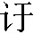

聚仁先生：
十一日信，十三才收到。昨天我没有去，虽然并非“兄弟素不吃饭”[457]，但实在有些怕宴会。办小刊物[458]，我的意见是不要帖大广告，却不妨卖好货色；编辑要独裁，“一个和尚挑水吃，两个和尚抬水吃，三个和尚无水吃”，是中国人的老毛病，而这回却有了两种上述的病根，书坊老板代编辑打算盘，道不同，必无是处，将来大约不容易办。但是，我说过做文章，文章当然是做的。
关于大众语问题，我因为素无研究，对个人不妨发表私见，公开则有一点踌躇，因为不豫备公开的，所以信笔乱写，没有顾到各方面，容易引出岔子。我这人又是容易引出岔子的人，后来有一些人会由些[此]改骂鲁迅而忘记了大众语。上海有些这样的“革命”的青年，由此显示其“革命”，而一方面又可以取悦于某方。这并不是我的神经过敏，“如鱼饮水，冷暖自知”[459]，一箭之来，我是明白来意的。但如 先生一定要发表，那么，两封[460]都发表也可以，但有一句“狗才”云云，我忘了原文了，请代改为“客观上替敌人缴械”的意思，以免无谓的纠葛。
语堂是我的老朋友，我应以朋友待之，当《人间世》还未出世，《论语》已很无聊时，曾经竭了我的诚意，写一封信，劝他放弃这玩意儿，我并不主张他去革命，拚死，只劝他译些英国文学名作，以他的英文程度，不但译本于今有用，在将来恐怕也有用的。他回我的信是说，这些事等他老了再说。这时我才悟到我的意见，在语堂看来是暮气，但我至今还自信是良言，要他于中国有益，要他在中国存留，并非要他消灭。他能更急进，那当然很好，但我看是决不会的，我决不出难题给别人做。不过另外也无话可说了。
看近来的《论语》之类，语堂在牛角尖里，虽愤愤不平，却更钻得滋滋有味，以我的微力，是拉他不出来的。至于陶徐[461]，那是林门的颜曾，不及夫子远甚远甚，但也更无法可想了。
专复即请
道安。
迅 顿首 八月十三日
注 释
[457] “兄弟素不吃饭” 北洋政府参政院参政屈映光的话。据《屈映光纪事》（未署作者、出版处）：“映光前年赴京觐见，有友某招其晚餐，映光复书谢之曰弟向不吃饭，更不吃晚饭云云，京内外传为笑柄。”
[458] 这里指曹聚仁、徐懋庸筹办的《芒种》半月刊。
[459] “如鱼饮水，冷暖自知” 语出北宋僧人道言《传灯录·蒙山道明》：“如人饮水，冷暖自知。”南宋岳珂《桯史·记龙眠海会图》又有“如鱼饮水，冷暖自知”的话。
[460] 指340729信及《答曹聚仁先生信》（后者收入《且介亭杂文》）。
[461] 陶徐 指陶亢德和徐

。下文的颜曾，指孔子的学生颜回和曾参。